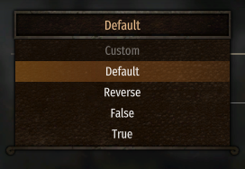
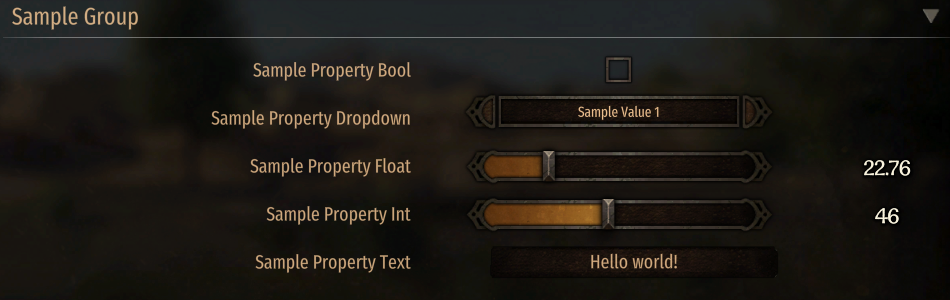

Overview
MCMv3 consists of three core libraries:
- MCMv3 - abstraction layer. Includes v1/v2 Attribute API and a Fluent Builder API that allows to define settings at runtime.
- MCMv3.Implementation - common implementations.
- MCMv3.UI - GauntletUI implementations.
MCMv3 also provides compatibility layers for other mods:
- MCMv3.Implementation.MBO - MBOv1/MCMv2.
- MCMv3.Implementation.ModLib - ModLib, pre 1.3 and post 1.3.
Both compatibility layers replace the original libraries to ensure maximum compatibility with MCMv3.
Supported API
MCMv3 support 5 API sets:
- MCMv3 - main API.
- MBOv1 - MBOptionScreen v1.1.15 (Requires MCM.Implementation.MBO)
- MBOv2/MCMv2 - v2.0.4-v2.0.11 (Requires MCM.Implementation.MBO)
- ModLibV1 - v1.0.0-v1.0.2 (Requires MCM.Implementation.ModLib)
- ModLibV13 - v1.3.0-v1.4.0 (Requires MCM.Implementation.ModLib)
Using with your mods
You have two options as to how to use MCMv3:
- Integrate MCMv3 into your mod by using NuGet packet Bannerlord.MCM.Integrated
- Directly depend on the Nexus standalone mod and use NuGet packet Bannerlord.MCM
Warning
Integration is no longer supported and should be replaced with MCMv4 or newer.
By integrating MCMv3 you won't need to depend on the Nexus standalone package. It will be loaded with your mod and should pick up the settings from your mod and any other mod that uses MCMv3. ModLib and MBO/MCM compatibility will not be provided.
The v3 version still has sometimes issues with the integration system due to game limitations regarding being unable to load multiple versions of the same assembly (DLL). While those issues are not fixed I would suggest to depend on MCM package/Nexus mod if possible. I at least can guarantee that if the standalone MCM mod is installed, any bugs related to MCM are fixed without your need to update the integrated package. The next big release, v4, will not offer an integrated version in favor of the determinism and stability of relying upon a standalone mod.
You also need to include this to your SubModules.xml!
<SubModule>
<Name value="MCMv3 Integrated Loader"/>
<DLLName value="MCMv3.dll"/>
<SubModuleClassType value="MCM.IntegratedLoaderSubModule"/>
<Tags/>
</SubModule>
By depending on the standalone module the experience is basically the same as to ModLib. You only use the MCMv3 abstraction layer and the Nexus standalone mod will ensure that your settings are displayed.
Types of settings
As of now, Mod Option mods provided Global options that are shared across different games/saves.
MCMv3 introduces a second type of settings - PerCharacter, it will be unique for each character and will be shared across saves with the same character.
Included Settings Formats and implementing your own
MCMv3.Implementation provides json and xml file formats.
You can define your own file formats and take full control of how the settings are saved/loaded by implementing an interface that... implements ISettingsFormat and @"MCM.Abstractions.IDependency?text=IDependency".
public interface IYamlSettingsFormat : ISettingsFormat, IDependency
{
}
[Version("e1.0.0", 1)]
internal class YamlSettingsFormat : IYamlSettingsFormat
{
}
Presets
The setting support custom presets!

Attribute API
The Attribute API based settings will provide a 'Default' preset that can be used to revert the options to their default values.
To override the 'Default' preset or add your custom presets, override GetAvailablePresets(), here's an example.
public override IDictionary<string, Func<BaseSettings>> GetAvailablePresets()
{
var basePresets = base.GetAvailablePresets(); // include the 'Default' preset that MCM provides
basePresets.Add("Reverse", () => new CustomSettings()
{
Property1 = false,
Property2 = true
});
basePresets.Add("False", () => new CustomSettings()
{
Property1 = false,
Property2 = false
});
basePresets.Add("True", () => new CustomSettings()
{
Property1 = true,
Property2 = true
});
return basePresets;
}
Fluent API
The Fluent Builder does not support Presets in v3, but it's a planned feature for v4!
Localization
Attribute API
Both property Name and HintText support game's localization system, this means that you can use such code
[SettingPropertyBool("{=DvfsSDF}Property Sample", HintText = "{=DnfhFD}Sample Hint Text.")]
[SettingPropertyGroup("{=JFgbsdg}Group Sample")]
You also can use the localization system for nested groups!
[SettingPropertyGroup("{=JFgbsdg}Group Sample\{=GDgsdfj}Nested Group Sample")]
INotifyPropertyChanged
The settings implement the INotifyPropertyChanged interface.
MCM subscribes to it and will refresh the UI if any value has changed.
MCM will also trigger PropertyChanged event when the setting are saved by providing BaseSettings.SaveTriggered constant with value SAVE_TRIGGERED.
IRef
IRef is an interface that acts as a link to the actual values that classes like Fluent Builder uses.
MCMv3 has two implementations:
- PropertyRef - links to an actual property (
PropertyRef(PropertyInfo propInfo, object instance)). - ProxyRef<T> - links to get/set actions (
ProxyRef(Func<T> getter, Action<T>? setter)) that will set/return whatever you want.
Defining Settings

Example of Settings definition
Attribute API
internal sealed class MCMUISettings : AttributeGlobalSettings<MCMUISettings> // AttributePerCharacterSettings<MCMUISettings>
{
private bool _useStandardOptionScreen = false;
public override string Id => "MCMUI_v3";
public override string DisplayName => $"MCM UI Impl. {typeof(MCMUISettings).Assembly.GetName().Version.ToString(3)}";
public override string FolderName => "MCM";
public override string Format => "json";
[SettingPropertyBool("Use Standard Option Screen", Order = 1, RequireRestart = false, HintText = "Use standard Options screen instead of using an external.")]
[SettingPropertyGroup("General")]
public bool UseStandardOptionScreen
{
get => _useStandardOptionScreen;
set
{
if (_useStandardOptionScreen != value)
{
_useStandardOptionScreen = value;
OnPropertyChanged();
}
}
}
}
Fluent API
bool _boolValue = false;
int _intValue = 1;
float _floatValue = 0f;
string _stringValue = string.Empty;
var builder = new DefaultSettingsBuilder("test_v1", "Test Fluent Settings")
.SetFormat("xml")
.SetFolderName(string.Empty)
.SetSubFolder(string.Empty)
.CreateGroup("Testing 1", groupBuilder => groupBuilder
.AddBool("Check Box", new ProxyRef<bool>(() => _boolValue, o => _boolValue = o), boolBuilder => boolBuilder
.SetHintText("Test")))
.CreateGroup("Testing 2", groupBuilder => groupBuilder
.AddInteger("Integer", 0, 10, new ProxyRef<int>(() => _intValue, o => _intValue = o), integerBuilder => integerBuilder
.SetHintText("Testing"))
.AddFloatingInteger("Floating Integer", 0, 10, new ProxyRef<float>(() => _floatValue, o => _floatValue = o), floatingBuilder => floatingBuilder
.SetRequireRestart(true)
.SetHintText("Test")))
.CreateGroup("Testing 3", groupBuilder => groupBuilder
.AddText("Test", new ProxyRef<string>(() => _stringValue, o => _stringValue = o), null));
var globalSettings = builder.BuildAsGlobal();
globalSettings.Register();
globalSettings.Unregister();
var perCharacterSettings = builder.BuildAsPerCharacter();
perCharacterSettings.Register();
perCharacterSettings.Unregister();
Translating MCM
Just create a module and include in the module folder root folders ModuleData/Languages and include the translations of the following files:
The game will load them automatically!
Migrating to v3
ModLib v1 (1.0.0-1.0.2)
- [XmlElement] attribute is not required
- Namespace of
SettingPropertyAttributechanged to MCM.Abstractions.Attributes.v1 SettingPropertyAttribute.EditableMinValueandSettingPropertyAttribute.EditableMaxValuewere removedSettingPropertyAttribute.HintTextis an attribute optional parameter- MCM's
SettingPropertyAttributeintroduces new propertiesOrderandRequireRestart - Namespace of
SettingPropertyGroupAttributechanged to MCM.Abstractions.Attributes SettingPropertyGroupAttribute.IsMainToggleis an attribute optional parameterModLib.SettingsBaseneeds to be changed to AttributeGlobalSettings<T>ModNamewas renamed toDisplayNameModuleFolderNamewas renamed toFolderName, no longer required
ModLib v13 (1.3 and beyond)
- [XmlElement] attribute is not required
- Namespace of
SettingPropertyAttributechanged to MCM.Abstractions.Attributes.v1 SettingPropertyAttribute.EditableMinValueandSettingPropertyAttribute.EditableMaxValuewere removedSettingPropertyAttribute.HintTextis an attribute optional parameter- MCM's
SettingPropertyAttributeintroduces new propertiesOrderandRequireRestart - Namespace of
SettingPropertyGroupAttributechanged to MCM.Abstractions.Attributes SettingPropertyGroupAttribute.IsMainToggleis an attribute optional parameterModLib.Definitions.SettingsBaseneeds to be changed to AttributeGlobalSettings<T>ModNamewas renamed toDisplayNameModuleFolderNamewas renamed toFolderName, no longer required
MBOv1 (MBO 1.0.15 or lower)
- Attributes changed its namespace from
MBOptionScreen.AttributestoMCM.Abstractions.Attributes MBOptionScreen.Settings.AttributeSettings<T>needs to be changed to AttributeGlobalSettings<T>ModNamewas renamed toDisplayNameModuleFolderNamewas renamed toFolderName, no longer required
MCMv2 (MCM v2.0.10 or lower)
- Attributes changed its namespace from
MBOptionScreen.Attributesto MCM.Abstractions.Attributes MBOptionScreen.Settings.AttributeSettings<T>needs to be changed to AttributeGlobalSettings<T>ModNamewas renamed toDisplayNameModuleFolderNamewas renamed toFolderName, no longer required